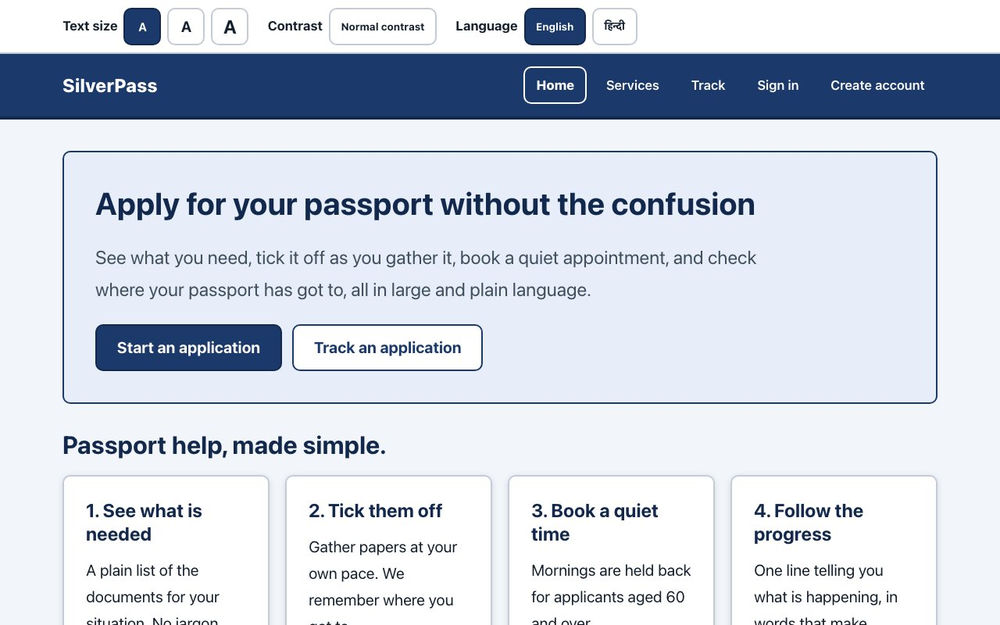
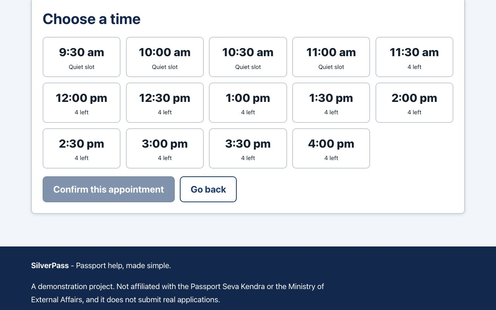
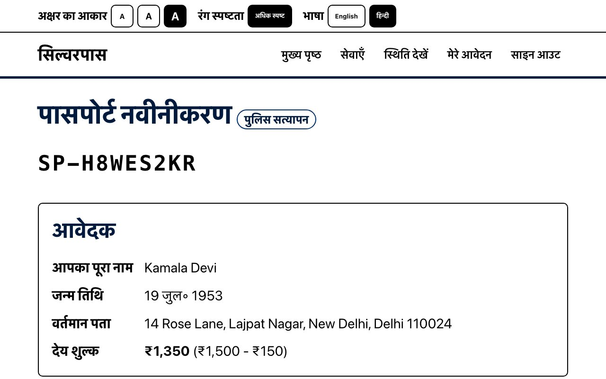

- 1 Projects
- 2 Details
- 3 Code on GitHub
Open source | Express and React | Accessibility first
SilverPass
A demo passport-services app built for someone who is 78, has never used a government website and cannot read 16px type. People compare services, work through a document checklist, book a quiet appointment and track their passport by reference number, with the interface in English or Hindi.
- React 18
- Vite
- Express
- MongoDB
- Zod
- node:test
- Vitest
- Testing Library
- GitHub Actions
- 135
- tests: 92 on the server, 43 in the web client
- 20px
- base text, with two larger steps
- 2
- storage backends held to one contract test
- 135
- interface strings in each of English and Hindi
Overview
What it does
People compare five passport services, start an application with a checklist of the documents they need and a fee quote, submit it, book a slot at one of five centres, and follow it by reference number without needing an account. The 10% senior concession is worked out from the applicant's date of birth.
It is a demonstration project. It is not affiliated with the Passport Seva Kendra or the Ministry of External Affairs, and it submits nothing real. The centres are made up too.
- Type
- Web app, npm workspaces monorepo
- Server
- Express, Zod validation, JWT sign-in
- Client
- React 18 and Vite
- Storage
- JSON file or MongoDB, chosen at boot
- Tests
- 135 with node:test, supertest and Vitest
- Status
- Demo, not a government service
Accessibility
Designed around a 78-year-old first-time user
Large text by default
Body text starts at 20px and steps up to 24px and about 29px from the bar at the top of every page. Lines stop at 62 characters and every target is at least 48px. Anyone who registers aged 60 or over starts with large text already on.
High contrast on request
One switch turns the whole site black on white with flat tints, no shadows and a thicker focus ring.
English and Hindi
The language buttons switch all 135 interface strings and the page's lang attribute together. A test fails the build if either language is missing a key or a placeholder.
Keyboard and screen readers
A skip link, proper landmarks, fields whose hints and errors are tied to them with aria-describedby, errors announced straight away and everything else announced politely, a visible focus ring and respect for reduced motion.
Plain words, hard-to-misread codes
Statuses and errors are written in plain language. Reference numbers leave out 0, O, 1 and I, and the centre picker shows step-free access and wheelchair availability up front.
Quiet slots for older people
Every day at every centre, the first four half-hour slots are held for people aged 60 and over. In the words of the docs: "Queueing is the single biggest barrier... the quietest slots are reserved rather than left to whoever books fastest."
How it works
Booking an appointment, from click to database
Pick a slot
The booking page loads the centres, the open dates and the free slots, and confirming calls the API.
web/src/pages/BookAppointmentPage.jsx
Call the API
request()adds the session token and turns any error response into anApiErrorthe page can show in plain words.web/src/lib/api.js
Pass the middleware
helmet headers, a CORS allow-list, a 100 KB body cap and a rate limit.
server/src/app.js
Authenticate and validate
authenticate()verifies the JWT and reloads the user.validateBody()checks the request against a Zod schema and answers with one clear message per field.server/src/routes/appointments.js, server/src/middleware/
Apply the booking rules
book()checks, in order: the date window, that the application belongs to you, that it is not a draft or closed, that it has no booking yet, that the time exists, the quiet-slot rule and the four-seat cap. Each failure has its own status code, and wheelchair and interpreter needs are copied onto the appointment.server/src/services/appointmentService.js
Store it
buildStore()picks the JSON store or MongoDB when the server starts, and the appointment is saved through the same interface either way.server/src/db/
Show the result
The API answers 201 with the centre's details. Every error comes back in one shape,
{ error: { code, message, details } }, and the application page reloads with its new status and the next steps allowed. Anyone can track by reference number, and the public tracking route returns no personal data.server/src/middleware/errorHandler.js, web/src/pages/TrackPage.jsx
Engineering decisions
Rules the code enforces
A status machine that refuses illegal jumps
An application moves only along the arrows below. Anything else gets a 409 that lists the moves that are allowed. The comment in the code says why: an application must "never jump from, say, draft straight to delivered".
Two stores, one contract
The JSON file store and the MongoDB store run the same ten contract cases: lookups by id and by email, missing rows, merging updates, per-user lists newest first, lookup by reference, seat counts that ignore cancellations, live appointments, returned copies and a full reset. The adapters are "interchangeable only if they behave identically", so the test makes sure they do.
Translations that cannot drift
The strings test checks both languages for missing or extra keys, identical placeholders and empty strings. Without it, a dropped {count} would show up on screen as the literal text.
Validation at the edge
The environment is checked with Zod when the server boots. Requests such as a booking are validated against a Zod schema before any business rule runs, and each field that fails gets its own plain message.
Allowed status changes
draft -> submitted, cancelled
submitted -> document_verification, on_hold, cancelled
document_verification -> police_verification, on_hold, rejected, cancelled
police_verification -> printing, on_hold, rejected, cancelled
printing -> dispatched, on_hold
dispatched -> delivered
on_hold -> document_verification, police_verification, rejected, cancelled
# delivered, rejected and cancelled are finalScreens
What it looks like



Tests and CI
How it is checked
135 tests. The server has 92, written with node:test and supertest against a throwaway store: unit 21, config 9, auth 14, applications 19, appointments 19 and the storage contract 10. The web client has 43, written with Vitest, jsdom and Testing Library: strings 5, formatting 5, accessibility 14, application 7 and user flows 12.
CI has four jobs. A quality job runs lint and the format check. The server job runs twice in a matrix, once on the JSON store and once on MongoDB 7 in Docker. The web job runs the client tests and a production build. Once the server and web jobs pass, a smoke job seeds data, boots the API, checks health, signs in and reads applications back.
Run it yourself
git clone https://github.com/vipul21435/SilverPass.git
cd SilverPass
npm install
cp .env.example .env
npm run seed --workspace server # optional demo data
npm run dev # API on :4000, web on :5173Needs Node 20.11 or newer. The demo sign-ins are listed in the README.
Step 3 of 3
The code
The Express API, the React client, both storage adapters, the tests, the CI workflow and the accessibility notes are all in the repository.
github.com/vipul21435/SilverPass